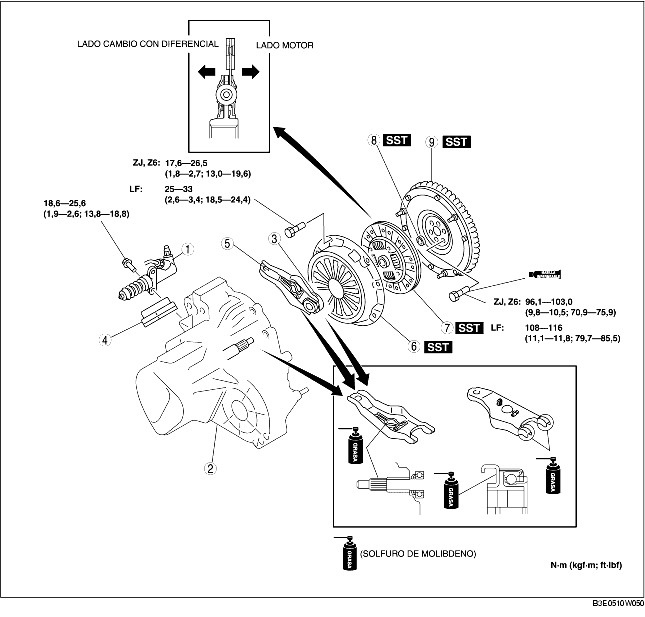

1. Quitar según el orden indicado en la tabla.
2. Instalar en el orden contrario al de la remoción.

.
|
1
|
Cilindro de desembrague
|
|
2
|
Cambio manual con diferencial
|
|
3
|
Cojinete de desembrague
(Véase CONTROL COJINETE DE DESEMBRAGUE).
|
|
4
|
Guardapolvo
|
|
5
|
Horquilla de desembrague
|
|
6
|
Tapa de embrague
|
|
7
|
Disco de embrague
|
|
8
|
Cojinete guía
(Véase Detalles de remoción cojinete guía).
|
|
9
|
Volante del motor
|
1. Quitar soporte antes de desmontar la horquilla de desembrague.
1. Instalar las SST.
2. Aflojar cada perno fileteado de una vuelta, según un orden cruzado, hasta que el resorte sea en tensión.
3. Quitar la tapa y el disco de embrague.
1. Utilizar la SST para quitar el cojinete guía.
1. Utilizar la SST para instalar el cojinete guía.
ZJ, Z6
LF
1. Bloquear el volante del motor mediante la SST.
2. Quitar los pernos fileteados uniformemente y gradualmente según un orden cruzado.
3. Quitar el volante del motor.
4. Controlar por si hay pérdidas del sello de aceite trasero del cigüeñal.
1. Instalar el volante del motor al cigüeñal.
2. Si se reutilizan los pernos, limpiar las roscas y el orificio y aplicar un compuesto para roscas.
3. Apretar manualmente los pernos de fijación del volante del motor.
4. Instalar la SST al volante del motor.
5. Apretar gradualmente los pernos de fijación del volante según un orden cruzado.
1. Bloquear el disco de embrague en posición mediante la SST.
1. Instalar las SST.
2. Apretar los pernos fileteados uniformemente y gradualmente según un orden cruzado.